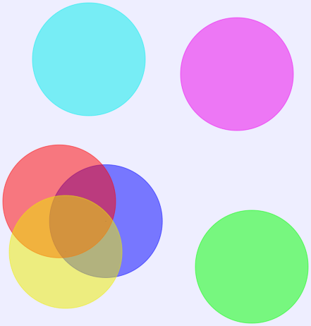

Common Usage and Example
- Architecture: C4 modelling, AWS, Azure, kubernetes, Elastics
- Programming: class, sequence, activity, parallel processing, state machine, process timeline, swagger open API
- Build & Configuration: cargo, gradle, terraform, ansible
- Network: DNS, trace route, Firewall, routing, apache log, gpg/pgp, sitemap, isp mapper, tcpdump
- Data translation: json, db schema, Text read stdin, xml sql
- AI: keras neural network, Word formation, Topic extraction
- Profiler
- Knowledge map
- Domain storytelling
- Org chart WBS
- Gantt chart
- Material design icon
- Directed/ undirected graph, Mindmap
Plantuml Installation
$cargo install mdbook-graphviz$cargo install mdbook-plantuml: require to change source code for "graphviz"$brew install graphviz: current 3.0.0$brew install plantuml: current 1.2022.5- for C4, remove any string after @startuml, otherwise mdbook will not render
install mdbook preprocessor in book.toml
[preprocessor.plantuml]
plantuml-cmd="/usr/local/bin/plantuml"
Container View
- sample with links, showing connection protocol between services

System Context View

Container View - shows application, service, microservice, etc

Component View

System Landscape View

Dynamic View

Deployment with Detail View

Container View on Messaging Bus

Sequence
- used for complex flow on calling external system

Class
- used for design pattern

Activity / Workflow
- used for complex workflow

Parallel Processing

State Machine

Timeline
- used to show lead time on each process

Network

JSON Specification

DITAA - DIagrams Through Ascii Art

Gantt Chart

Mindmap

Org Chart / WBS

Amazon Labs AWS

Azure Cloud

Elastic Search - ELK

Kubernetes
PlantUML rendering error: PlantUML did not generate an image, did you forget the @startuml, @enduml block (/usr/local/bin/plantuml -tsvg -nometadata /var/folders/th/c_6w7gtd299fh13whmfhgsq80000gn/T/.tmpDI8oCn/bea6074f3e96ab33929173613e1100c0b6b7bb2f.puml)?
Domain Storytelling

Material Design Icon

Directed Graph

undirected Graph

transparent color map

Maths
$$ \mu = \frac{1}{N} \sum_{i=0} x_i $$
PlantUML Themes:
list of official theme gallery
- mars
- blueprint